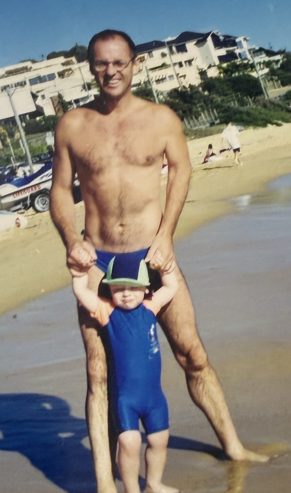
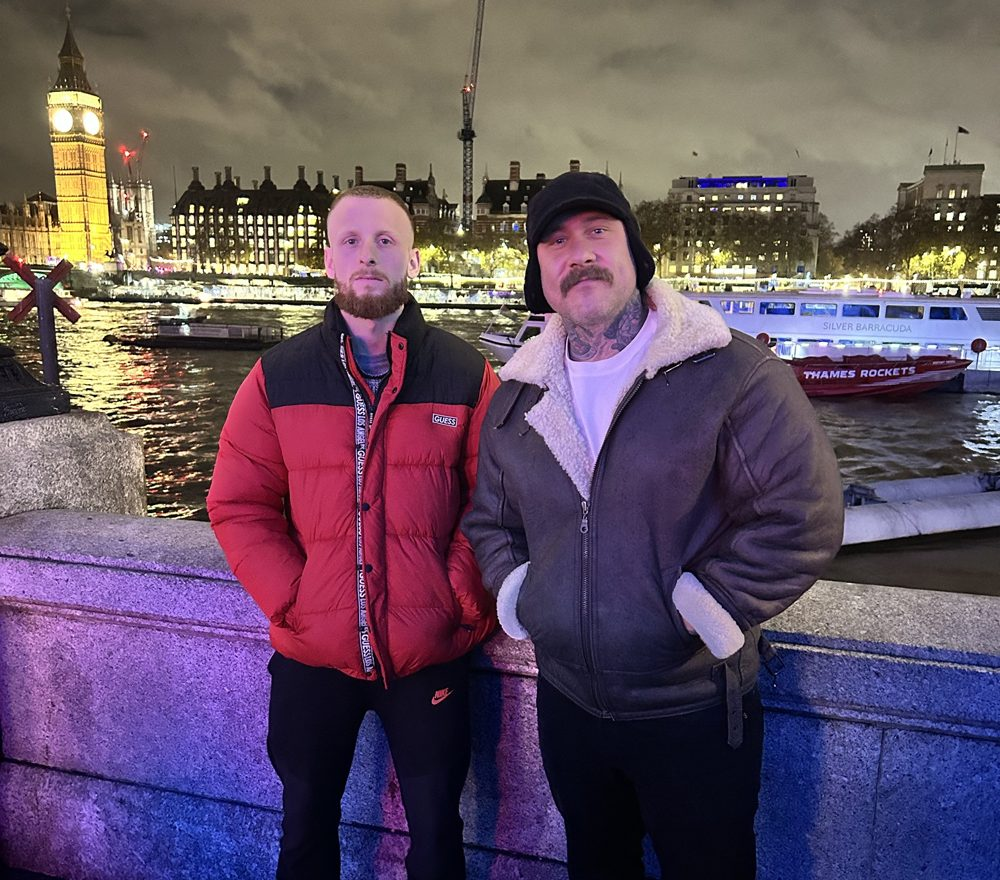

Why I do this
I didn't come to health because I loved it. I came to it on my knees. I nearly lost everything, and one man showed me the way back.

Never fit the mould
I was never built for school. I didn't fit in, I got told I had ADHD, and I got told I'd never amount to anything. If you couldn't sit still and learn their way, you were nothing, and they made sure you felt it.
No room for creativity. No freedom to think. School trains good workers, not good thinkers. But it's the thinkers who build things.
Watching my dad go
My dad was the strongest man I've ever known. Then cancer came, and over three years I watched it take him piece by piece, until there was almost nothing left. He died in 2017. Slowly. Scared. But never alone.
When I left school, I did what you're supposed to do and started TAFE to become a sparky. Right next door was the private hospital where Dad had his treatment and his surgeries, the same building he'd die in years later. I couldn't sit at a desk learning something that didn't light a single spark in me while my old man was fighting for his life next door.
You can't learn anything like that. You just sit there and carry it.
Going off the rails
Then the losses kept coming. Two of my closest mates, gone. I carry them both now, inked into my arms, so they come with me everywhere I go.
Grief has to go somewhere, and mine went sideways. The wrong people. Drinking, drugs, benders that rolled into the next morning. Food with nothing in it. I wasn't living. I was numbing.
I'd always been the skinny kid, so I decided to get big. Seventy kilos to a hundred and ten, on anything I could shovel in. On the outside I looked bigger. On the inside I was falling apart.
The day it all broke
I was roofing back then. One last big bender, and the next morning I woke up vomiting blood. My head went straight to Dad. This is it. This is how it starts. The panic hit like a wave. That night I went to my best mate's grave looking for something, anything, and it only pulled me further under.
From that day, my stomach shut the door. White bread was the only thing that stayed down. I didn't know yet that gluten was part of the problem. Days became weeks. Weeks became months. For almost a year it was GPs, specialists, scans, diets. Every door I knocked on gave me the same answer: we don't know.
I dropped to 60 kilos. Three hours of sleep on a good night. I could barely eat, barely drink water. I couldn't leave the house. I forgot how to drive. I could hardly get words out to my mum or my partner, the two people trying hardest to reach me. I honestly didn't think I could keep living like that.
It felt like a great white was swimming at me, all day, every day. The shark was in my head, and my body didn't know the difference.

Then I met Ryan
My mum never stopped fighting for me. She told anyone who'd listen. One day a woman told her about a man named Ryan, a holistic lifestyle coach, and Mum booked the call that same day.
I sat through that first call unable to keep still, my body trying to run from something that only existed in my head. Then Ryan said, "I understand what you're going through."
The two things killing me most were the isolation, and no one knowing what was wrong with me. A year of experts telling me they had no idea. And here was a man who'd stood where I was standing, naming every single thing I felt before I could find the words. I can't describe that relief. It was like someone finally turned the lights on in a house I'd been lost in for a year.
It wasn't quick, and it wasn't magic. For two years we changed one thing a week. Clean water. Real food. The right supplements. Slowly teaching my nervous system it was safe again. Brick by brick, he helped me build my way back.
Rebuilding from empty
I was awake, but I wasn't alive. The only thing running through me was adrenaline and cortisol, an engine redlining with nothing in the tank. Exhausted, and still unable to sleep.
So I rebuilt. Months, then years, of learning what lifted me and what knocked me flat, and how much training I could take before I burnt out. Every time I pushed too hard, it threw me further back. Two steps forward. Four steps back. Again, and again.
The lesson took years to sink in: rest isn't weakness. Getting out of fight or flight is the foundation everything else stands on. I still push. I'm always hunting the edge. That's just who I am. The difference is that now I know where the edge is.
The first thing that came back wasn't my energy. It was my mood. After a few months I could get to bed a little earlier each night, and for the first time I started to feel like maybe there was a way to unravel all of this.
I rebuilt my gut. I rebuilt everything. But the hardest rebuild, by far, was my mind.
The body is easy. The mind and nervous system aren't.
Why I coach
Getting my life back cracked something open in me. Health stopped being about food and training. It became mind, body and soul. Along the way I found a deep, quiet peace in Christ and the Catholic Church, and a brotherhood of men I'm grateful for every single day.
Every job I worked, on the roofs, on the tools, behind the butcher's block, was a wake-up call. Each one taught me what I didn't want: to spend my life building someone else's dream. So now I'm building my own, one where my work actually means something and helps people get their lives back.
Ryan is my inspiration, and so are the brothers in my circle now. I saw what he did for me, and I knew I had to do that for someone else. So I trained with the CHEK Institute, and I'm now training as an Integrative Health Practitioner under Dr Stephen Cabral.
I want to reach people before they end up where I was, or where my dad was.
If you're running on empty, I know that road. If you're right at the bottom, I know that place too. You don't have to find your way out alone. Let's work out why, and fix it one step at a time.
Find out why you're flat
Ten questions. You get your energy type and three things to change this week.
Take the quiz → Work with me 1:1If you're struggling right now, please reach out. In Australia, call Lifeline on 13 11 14, any time. In an emergency, call 000.